Benutzeroberfläche und Navigation¶
Ethos lässt sich vollständig mit dem rechten Drehwähler bedienen (drehen,
um die Markierung zu bewegen, drücken für ENT) sowie mit der Taste RTN,
um ein Menü wieder zu verlassen — der Touchscreen ist, sofern vorhanden,
lediglich eine Abkürzung für dieselben Aktionen und keine eigenständige
Bedienweise. MDL, DISP und SYS führen direkt zu Model Setup, Einstellung
Ansichten bzw. System Setup (dieselben drei Kacheln wie in der unteren Leiste);
durch langes Drücken der RTN-Taste kehren Sie aus jedem Untermenü direkt zum
Startbildschirm zurück.
Reset Menü¶
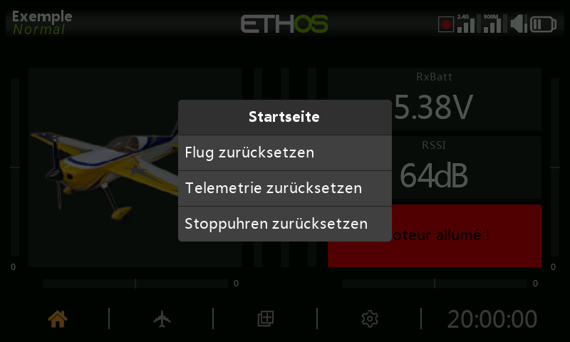
Durch langes Drücken der ENT-Taste auf dem Startbildschirm wird ein
Rücksetzmenü aufgerufen:
- Flug zurücksetzen — setzt die Telemetrie, die Timer und die Funktionsschalter zurück und führt anschließend die Vorflug-Checkliste erneut aus.
- Telemetrie zurücksetzen — setzt nur die Telemetriedaten zurück.
- Stoppuhren zurücksetzen — setzt nur die Stoppuhren zurück.
- Touchscreen sperren — ebenfalls erreichbar, indem Sie im Startbildschirm
ENTundPAGEgleichzeitig 1 Sekunde lang drücken, oder als Auslöser einer Spezialfunktion.
Bearbeitung von Steuerelementen¶
Funktionselemente hinzufügen — eine Stoppuhr, ein Logischer Schalter, eine
Spezialfunktion, eine Kurve oder eine Variable wird durch Antippen der
Schaltfläche + neben den Spaltenüberschriften im jeweiligen Menü erstellt.
Bei einem Sender ohne Touchscreen markieren Sie ein vorhandenes Element,
drücken ENT und wählen im Menü Hinzufügen — dieselbe Möglichkeit steht
auch bei Sendern mit Touchscreen zur Verfügung.
Virtuelle Tastatur¶
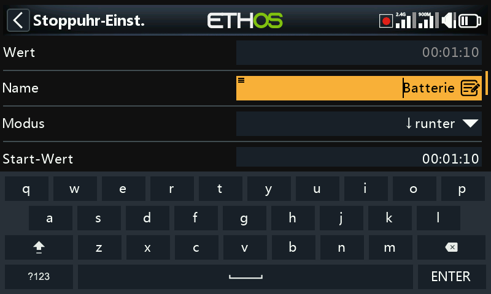
Beim Berühren eines Textfeldes (oder Drücken von ENT darauf) öffnet sich die
Bildschirmtastatur. Die Rücktaste löscht links vom Cursor; PAGE löscht nach
rechts und, sobald der Cursor das Textende erreicht hat, weiter von links.
Ein Berühren des Feldes selbst setzt den Cursor an diese Position — oder
verwenden Sie SYS/DISP, um ihn ohne Touchscreen nach links/rechts zu
bewegen. Die Taste ?123/abc schaltet auf das numerische Tastenfeld um
(das auch Sonderzeichen enthält):
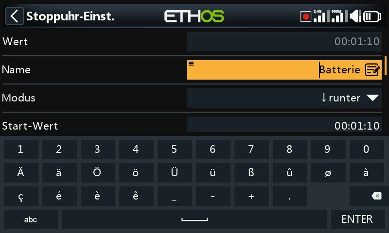
Bei einem Sender ohne Touchscreen wechselt ein Druck auf ENT in einem
Textfeld direkt in den Bearbeitungsmodus: Drehen Sie den Drehwähler, um durch
Kleinbuchstaben, Großbuchstaben, Ziffern und schließlich Sonderzeichen zu
blättern, und drücken Sie ENT, um das jeweilige Zeichen einzufügen. MDL
schaltet die Groß-/Kleinschreibung des Zeichens unmittelbar rechts vom Cursor
um (und jedes danach eingegebene Zeichen behält diese Schreibweise, bis erneut
umgeschaltet wird). PAGE löscht rechts vom Cursor; SYS/DISP bewegen ihn
nach links/rechts.
Zahlenwerte ändern¶
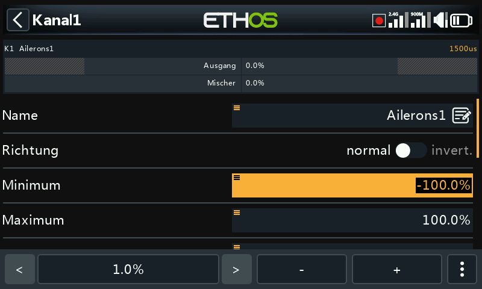
Beim Berühren eines numerischen Feldes öffnet sich am unteren Bildschirmrand
eine Bedienleiste: </> ändern die Schrittweite (im Wechsel zwischen
den Dekaden — z. B. 0,01/0,1/1,0/10,0), -/+ (oder der Drehwähler)
verändern den Wert um diese Schrittweite, und Mehr öffnet weitere Optionen:
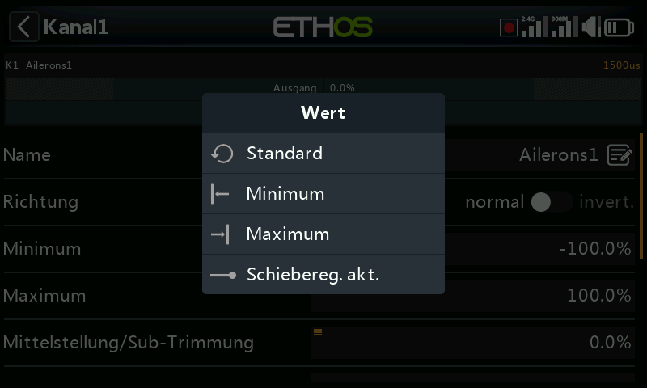
- Zum Standardwert des Feldes springen
- Auf Minimum / auf Maximum setzen
- Die Schrittsteuerung durch einen Schieberegler ersetzen
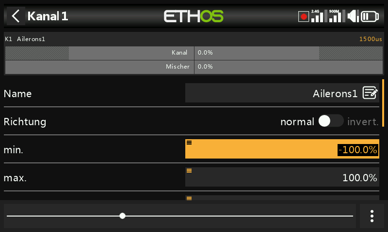
Der Schieberegler (ebenfalls mit dem Drehwähler verstellbar) ist bei groben Änderungen schneller; Schieberegler deaktivieren kehrt zur Schrittsteuerung zurück. Telemetrie-Bereichswerte werden auf dieselbe Weise bearbeitet:
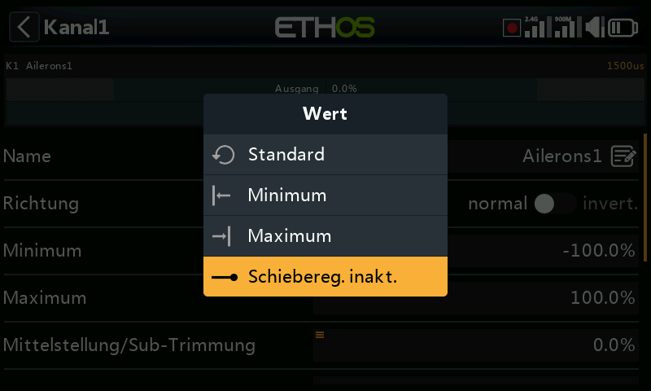
Funktion Optionen¶
Nahezu überall dort, wo ein Wert oder eine Quelle
erwartet wird, öffnet ein langer Druck auf ENT einen Dialog Optionen —
das kleine Menüsymbol („Hamburger“) in der oberen linken Ecke eines Feldes
zeigt an, dass diese Funktion verfügbar ist.
Wertoptionen¶
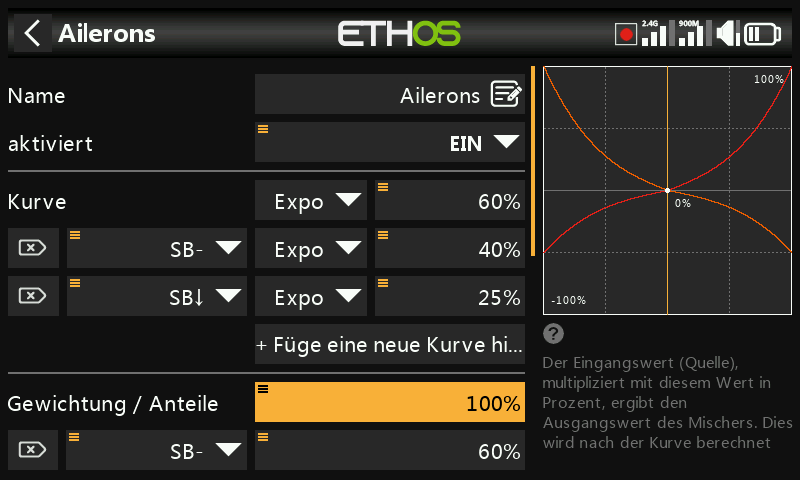
Der Dialog mit den Wertoptionen benennt den zu bearbeitenden Parameter und bietet die Wahl zwischen einem festen Minimum/Maximum und der Steuerung über eine Quelle (z. B. ein Poti, um den Wert im Flug zu verändern). Verwendet das Feld bereits eine Quelle, bietet derselbe lange Druck stattdessen an, den aktuellen Wert dieser Quelle in einen festen Wert umzuwandeln:
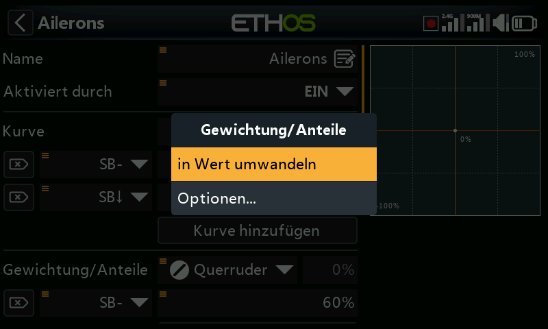
Eine Quelle auswählen¶
Die Auswahl von Quelle wählen öffnet eine zweispaltige Auswahlliste — zuerst eine Kategorie (Analoggeber, Schalter, Logische Schalter, Trimmungen, Kanäle, eine Gyro-Achse, ein Trainer-Kanal, eine Stoppuhr, ein Telemetriesensor oder einige Sonderwerte), danach das konkrete Element daraus:
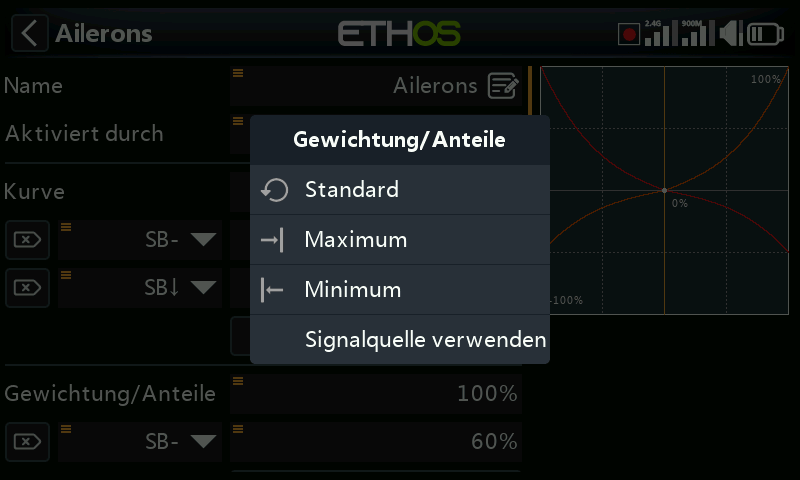
Sobald eine Quelle festgelegt ist, öffnet derselbe lange Druck Optionen, die sich nach der Art der Quelle richten:
Jede Quelle —
- Invertieren — negiert die Quelle (z. B. aktiv, wenn ein Schalter nicht oben ist, statt wenn er oben ist).
- Flanke — löst einmalig bei einem Übergang aus (falsch→wahr oder
wahr→falsch), statt während des gesamten Zustands aktiv zu bleiben;
dargestellt mit dem Präfix
†vor der Quelle. Verfügbar bei Schaltern allgemein sowie speziell bei der Auslösebedingung des Logischen Schalters „Sticky“.
Knüppel-Quellen — Optionen im Stil von Kalibrierung/Subtrimmung:
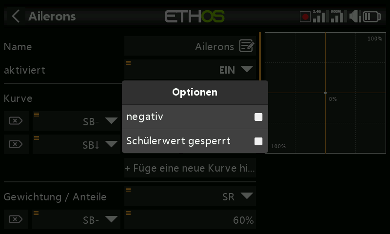
Schalter-Quellen —
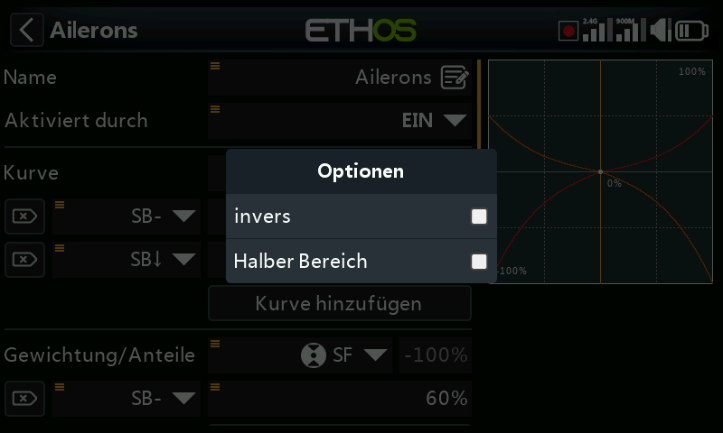
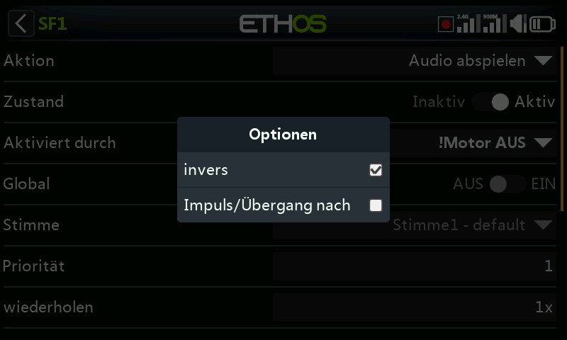
- Negativ — invertiert die Schalterwirkung.
- HalfRange — ändert bei einem 2-Positionen-Schalter oder einem Logischen Schalter den Ausgangsbereich von ±100 % auf 0–100 %.
Trimm-Quellen —
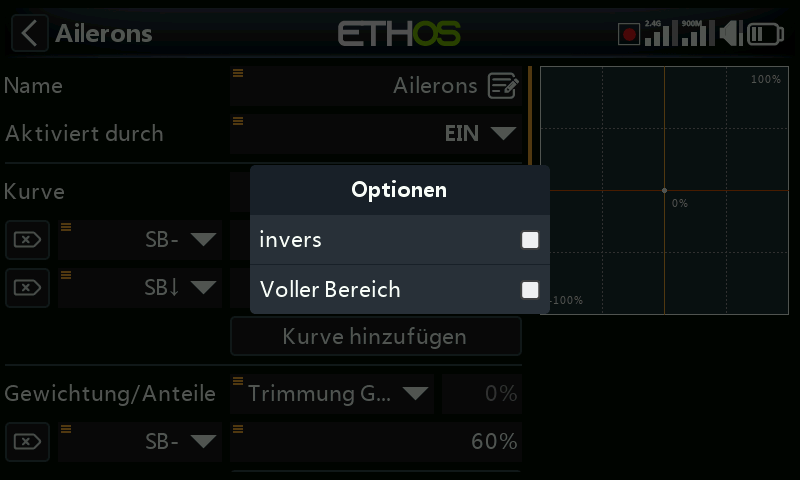
- Negativ — invertiert die Trimmwirkung (nützlich innerhalb der Aktionen eines freien Mischers).
- Voller Bereich — Trimmungen liegen standardmäßig bei ±25 %; als Quelle kann dies auf ±100 % erweitert werden.
- Schülereingaben ignorieren — schließt bei einem Logischen Schalter Bewegungen des Schülereingangs vom Auslösen des Schalters aus. Typische Anwendung: die eigene Knüppelbewegung des Lehrers erkennen (z. B. um sofort einzugreifen, wenn der Schüler einen Fehler macht), ohne dass die Knüppeleingaben des Schülers den Schalter ebenfalls auslösen.
Variablen-Quellen —
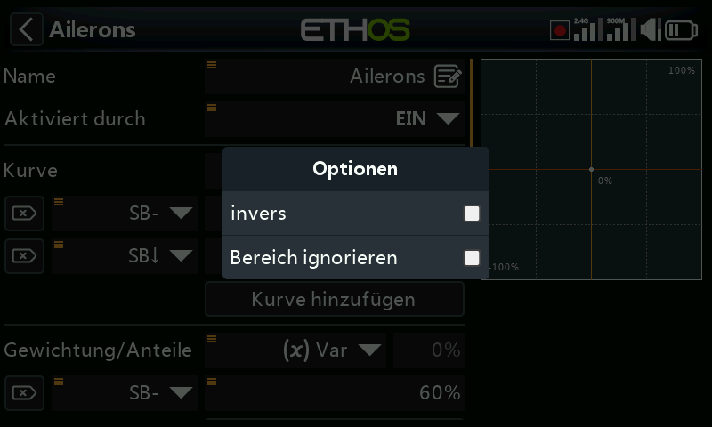
- Negativ — negiert den Wert der Variablen für diese Verwendung.
- Bereich ignorieren — manche Felder haben asymmetrische Bereiche (z. B. Min/Max bei den Ausgängen, die von −150–0 % bzw. 0–150 % reichen). Sofern eine als Quelle dieses Feldes verwendete Variable nicht genau denselben Bereich besitzt, aktivieren Sie diese Option, um die automatische Bereichsumrechnung von Ethos zu überspringen und unerwartete Werte zu vermeiden.
Telemetriesensor-Quellen — reduzieren die Quelle auf ihr laufendes Minimum oder Maximum statt auf den momentanen Messwert (manche Sensoren bieten darüber hinaus weitere sensorspezifische Optionen):
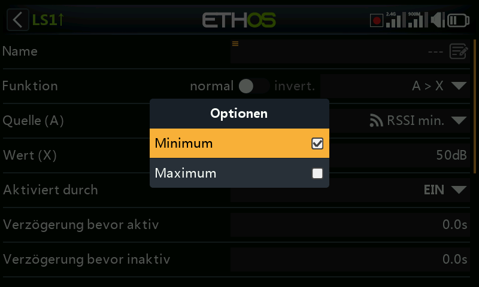
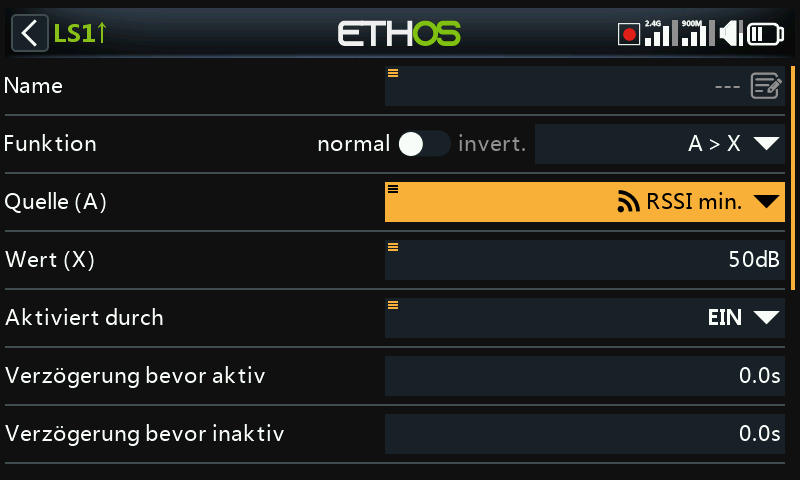